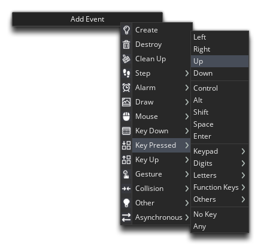
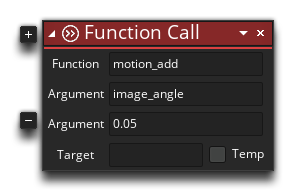

Our player ship can turn left and right, but it's not able to move yet - let's fix that now! To start with, go back to the object obj_ship, and add a new Keyboard Down event the Up arrow key:

In this event we actually need to use a bit of GML, as there is no corresponding action for the functionality that we want. We could chain together a large DnD&tm; solution using the maths actions, but why complicate things whenGameMaker Studio 2 already has a GML function we can use? To add a function into a DnD™ action chain, simply select the Common toolbox section and then drag a copy of the action Function Call into the workspace.
Once you have the action, set its values like this (you can click the (+) icon of the action to add more arguments):

So, what does the motion_add() do? Well, we're going to use it to set the speed and direction of the instance. The "speed" of an instance in GameMaker Studio 2 is the number of pixels the instance should move each step of the game, so setting speed = 2; means that the instance will move 2 pixels every step of the game. However, speed means nothing without a direction, and so we also have the direction variable to set the direction of movement when speed is anything other than 0. Together these create a vector.
Now, explaining vector maths is outside of the scope of this tutorial, but luckily there's no need as GameMaker Studio 2 has functions that will help you , without having any advanced mathematical knowledge. In this case it's the motion_add() function. This function takes an angle of direction, and then adds a certain amount of momentum to the speed of the instance in that direction - in the above code we are using the current image_angle (which we set in the left/right keyboard down events) to get the direction of motion and setting the amount of momentum to add as 0.05 pixels per step. This might seem a small amount, but adding to the ship momentum is a cumulative effect, so each step that we add this value, the ship will get faster and faster (in the same direction). We use this method over setting the x/y position directly, as it enables us to easily create a "floaty" feel for the movement, perfect for a game set in space!
With that done, you can test the game again, and you should be able to move the ship around by tapping or holding the Up Arrow key, and if you rotate then the direction of movement should change over time too.
Click on the "Next" button to continue...